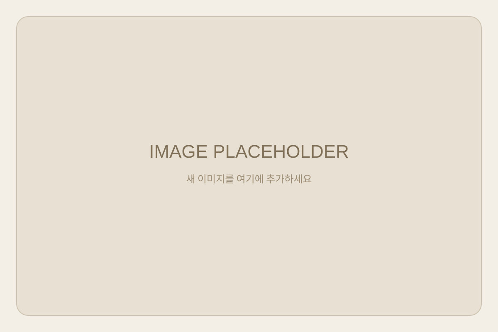

학생의 방향을 찾습니다
성적과 전형만이 아니라 흥미, 강점, 학습 습관, 학교생활의 흐름을 함께 살펴 진로의 방향을 구체화합니다.
SIGNAL EDU
학생의 가능성을 읽고, 진로·진학·학습의 방향을 함께 설계하는 교육 컨설팅 브랜드입니다.
학생의 현재를 분석하고, 가능성을 해석하며, 성장의 다음 방향을 설계합니다.
Since 2021 · Signal Education
시그널에듀는 학생 한 사람의 성향과 학습 습관, 진로에 대한 관심, 학교생활과 현재의 준비 수준을 함께 살펴보며, 지금 이 학생에게 어떤 방향이 가장 현실적이고 지속 가능한지 함께 찾아가는 교육 컨설팅 브랜드입니다.
학생에게 정말 필요한 것은 단순히 더 많은 정보를 아는 것이 아니라, 자신에게 맞는 기준을 세우고 그 기준에 따라 진로와 진학, 학습의 선택을 이어갈 수 있는 힘이라고 생각합니다.
그래서 시그널에듀는 개인 맞춤 컨설팅과 AI 기반 학습·진로 분석, 학교와 기관 연계 프로그램을 통해 학생과 학부모가 막연한 불안보다 분명한 방향을 가지고 앞으로 나아갈 수 있도록 돕고 있습니다.
성적과 전형만이 아니라 흥미, 강점, 학습 습관, 학교생활의 흐름을 함께 살펴 진로의 방향을 구체화합니다.
막연한 입시 정보 대신 우리 아이에게 필요한 선택 기준과 준비 순서를 이해하기 쉽게 안내합니다.
진로·진학 특강, 학습 코칭, 검사 해석, 프로그램 운영 등 교육 현장에 맞춘 연계 프로그램을 제공합니다.
시그널에듀는 학생을 성적표 하나로 판단하지 않습니다. 학생의 경험과 선택, 태도 속에서 성장의 신호를 찾습니다.
성적, 전형, 결과보다 앞서 학생의 성향과 환경, 학습 태도, 관계, 생활 리듬을 살피는 것에서 출발합니다.
희망 전공, 과목 선택, 학교생활, 비교과 활동, 학습 전략, 입시 준비를 하나의 흐름으로 연결합니다.
단기간의 불안 해소가 아니라 학생이 실제로 움직이고 성장할 수 있는 계획과 점검 구조를 만듭니다.
학생의 변화가 지속되려면 가정의 이해와 지지가 필요합니다. 상담 결과와 실행 방향을 학부모가 함께 이해하도록 돕습니다.
상담에서 확인한 정보를 방향, 계획, 점검으로 이어갑니다.
진단 결과는 상담자의 해석을 거쳐 학생과 학부모가 실행할 수 있는 언어로 정리됩니다.
데이터와 상담, 진로와 진학, 학생과 학부모를 하나의 흐름으로 연결합니다.
학생의 학습 상태, 진로 관심, 학교생활, 과목 선택, 입시 준비도를 종합적으로 살핍니다.
검사 결과와 상담 내용을 바탕으로 학생에게 보이는 강점, 위험 신호, 성장 가능성을 해석합니다.
진로 방향, 학습 전략, 생활기록부 관리, 입시 준비 로드맵을 학생에게 맞게 설계합니다.
상담 이후에도 실행 과정을 점검하고, 필요한 시점에 방향을 조정할 수 있도록 돕습니다.
학생의 성장을 함께 설계하는 시그널에듀 연구진과 컨설턴트 그룹입니다.

방문 상담은 사전 예약제로 운영됩니다. 방문 전 위치와 상담 일정을 확인해 주세요.
상담은 학생의 현재 상황과 상담 목적을 미리 확인한 뒤 진행됩니다. 네이버지도, 카카오맵 등 외부 지도 서비스와 연동해 실제 위치 확인이 가능하도록 확장할 수 있게 구성했습니다.
광주 서구 유림로 98번길 49, 4층
방문 상담과 사전 일정 조율 기반의 맞춤 상담으로 진행됩니다.
전화, 카카오톡, 홈페이지 상담 신청으로 예약 가능합니다.